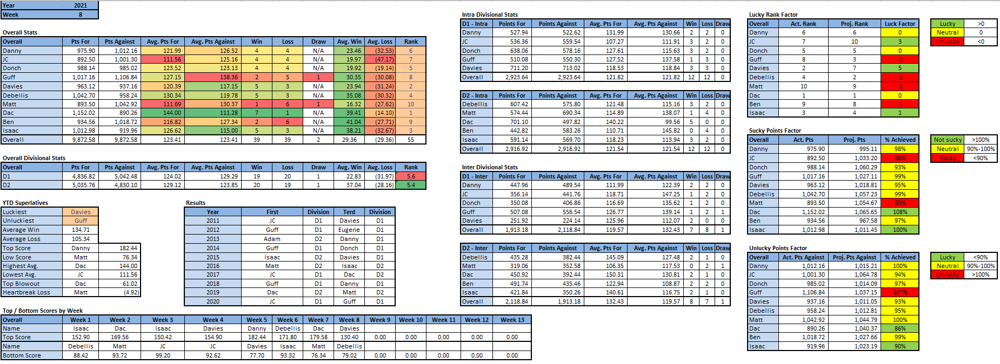
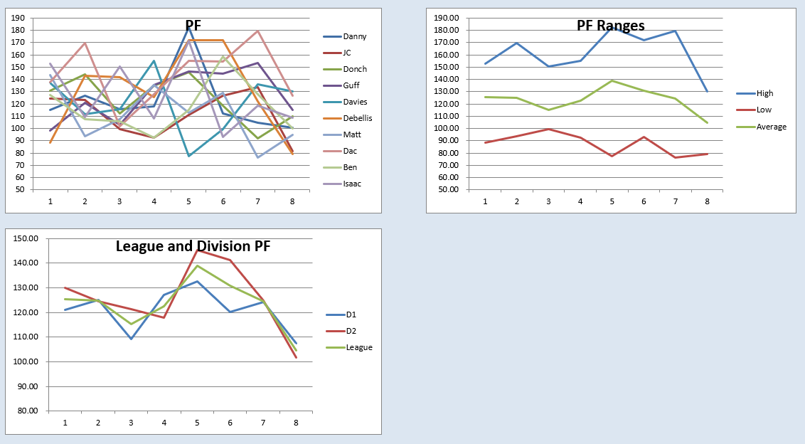

Power Rankings
WEEK 8 POWER RANKINGS
One last globeritto
- Dac (-): Dac had his second worst week of the year and still scored 126, which was good enough for a 30 point victory over Matt, king of the dumps. Despite his down week, the end result was never in question. Damien Harris and Joe Mixon have both been surprisingly solid contributors on Dac’s team, along with Kupp and Samuel, two of the top four WRs on the year. On paper, there is no one who stands a chance against Dac the rest of the year, but crazier things have happened, such as Ben’s fraudulent act of ecstasy.
- Davies (+4): Excluding Dac’s unfair team, Davies has the longest win streak in the league with 2 straight wins. Granted they were against Isaac’s crippled team and league low in points JC, but a win is a win. What Davies lacks in RB strength, and boy does he lack RB strength, he makes up for with WRs. Tyreek, Godwin, and Pittman all scored 20+ pts, each individually outscoring Gaskin and Chubb combined. Despite the top WRs and win streak, Davies does have some issues this upcoming week as his TE caught the rona and one of his idiot WRs literally killed a lady.
- Isaac (+1): In the surprise upset of the week, Isaac’s D- squad got a completely undeserved victory against the 2nd highest scorer in the league and only scored 111 pts. Josh Allen once again put the team on his back while DK Metcalf kept up his superb year. James Connor had his standard 2 TDs on 2 carries for 2 yards and TJ Hockenson finally justified his draft position. Incredibly, and likely due to finally catching a break after having his good name and integrity falsely dragged through the mud by Lyft, Isaac was not punished for allowing the league to mentally manipulate him into benching Boston Scott and his 18 points for a whopping 11 return yards by Kalif Raymond.
- Debellis (-2): Debellis had his worst game of the year, and easily the most humiliating, as he lost by 30 points to Isaac’s team of Josh Allen and 8 high school players. Aaron Jones started the week off with a bang, with 21 pts on TNF, but it was all downhill after that. Most notably, Derrick Henry is now out for the year after single handedly being responsible for half of Debellis’ wins. On top of that, Jalen Hurts only scored 11 points despite the Eagles scoring 44. There hasn’t been a more embarrassing failure to score despite favorable conditions since team Hollidaysburg was in high school.
- Donch (+2): After a tough 3 game losing streak, Donch was able to get back on that winning wagon. With 2 injured QBs on his roster, Donch had to go to his third stringer Daniel Jones and got a respectable 20 points for his second consecutive successful week of QB streaming. In a less impressive managerial move, Donch left 20 Tyler Lockett points on his bench, which is the headache of owning Tyler Lockett. Thankfully for Donch, a fortuitous scheduling matchup against Danny let this slip up go unpunished and unnoticed until now.
- Danny (-1): Per usual, Danny got 33% of his points from Tom Brady while he replaced all his anti-vaxxers with the worst waiver pickups known to man. He had to call in a special commissioner’s exemption to get a whole 6.6 Christian Kirk points to replace Davante Adams which actually turned out to be his best move of the week. David Johnson’s 0.8 pts, Ricky Seals-Jones’ 2.2 pts, and Alex Collins’ 4.4 pts did him no favors either. The cherry on top is Danny rejecting a trade of Boston Scott and 18 pts for dropped player Julio Jones and his 0.0 pt replacement Russell Gage, a move that cost him the victory and potentially playoffs.
- JC (-4): JC’s lucky 3 game win streak came to an abrupt end this week against Davies’ suddenly red hot team. After winning 3 in a row while averaging 10 pts less than the league’s average winning score, JC put up 82 points in his worst game of the season. Kyler Murray had a pitiful 9 pts while Manny Sanders contributed a cool 0. Considering the fact that 44% of JC’s team had their worst game of the year, 82 points doesn’t seem that bad.
- Guff (+1): Guff emerged victorious this week in the battle of the dumps. It wasn’t impressive, but Guff continues to grind, making himself a favorite for the 8th seed and possibly the 7th if all goes well. His draft of 6 RB1s has resulted in actually 2 RB1s, but they have contributed immensely to Guff’s two wins and tie despite facing almost 140 points a week. With a little bit of luck, aka Matt straight up gifting him Patrick Mahomes, Guff can finally start to relax about being a re-Terd.
- Ben (-1): Ben’s flukey little 2 game win streak ended in disappointing fashion as he failed to defeat the Terd. He did not break 100 and scored 0 TE points for about the 8th time this season, with those two stats having high correlation. Bobby Trees is on (forest) fire lately, as is million FAAB man Eli Mitchell. The last thing Ben needs after this loss is getting blown out by Dac, but sometimes one must break down before building back stronger.
- Matt (-): As everyone predicted, Matt lost to Dac without Dac even having to break a sweat. It wasn’t as bleak a week as normal, as 6 of Matt’s players scored double digits. Also in Matt’s defense, there wasn’t a single roster combination that would’ve resulted in victory this week despite Dac having his second lowest score. After 6 losses with a tie sprinkled in, Matt’s best chance to steal a victory the rest of the year comes this week as he faces Isaac and his gang of third string RBs.

